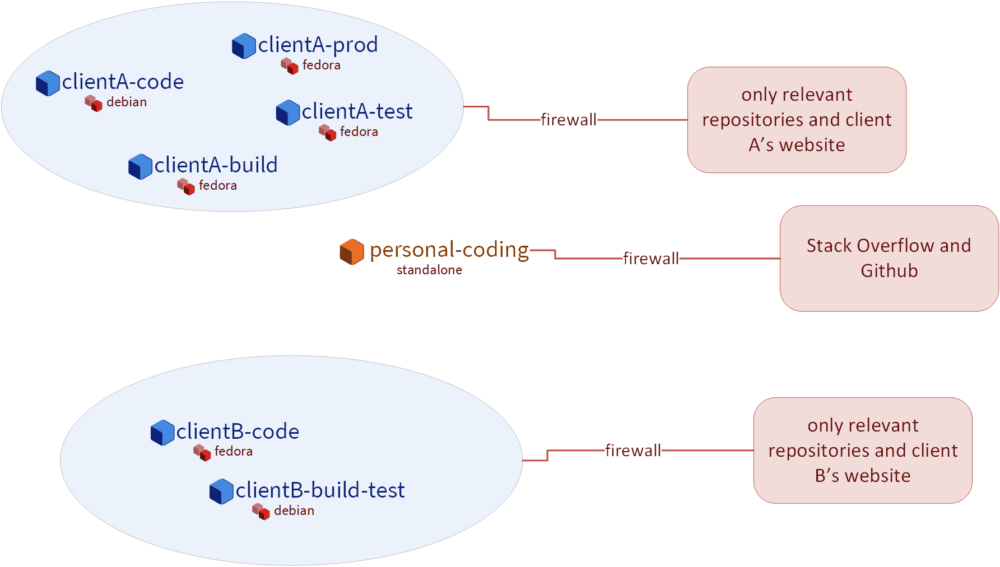
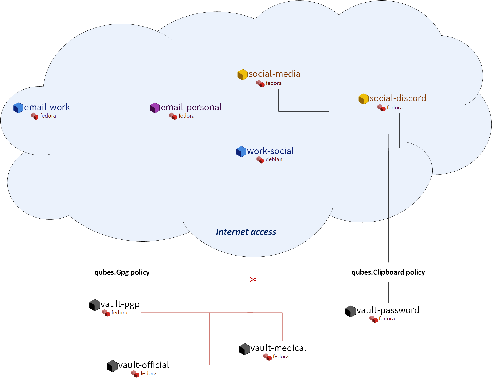
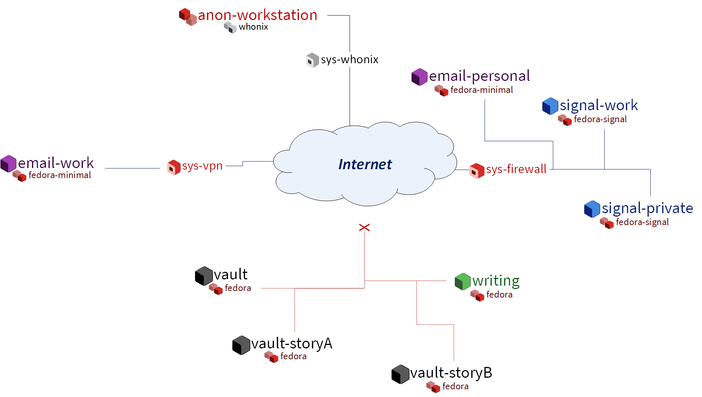
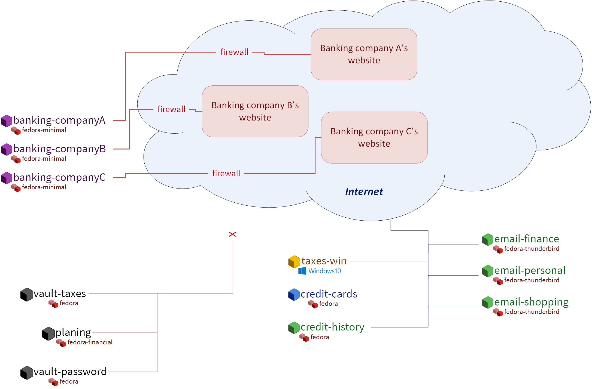
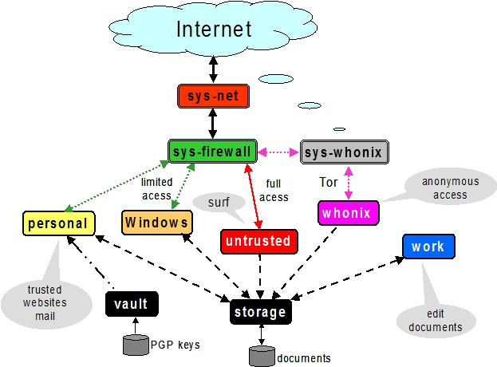

How to organize your qubes
When people first learn about Qubes OS, their initial reaction is often, “Wow, this looks really cool! But… what can I actually do with it?” It’s not always obvious which qubes you should create, what you should do in each one, and whether your organizational ideas makes sense from a security or usage perspective.
Each qube is essentially a secure compartment, and you can create as many of them as you like and connect them to each other in various ways. They’re sort of like Lego blocks in the sense that you can build whatever you want. But if you’re not sure what to build, then this open-ended freedom can be daunting. It’s a bit like staring at a blank document when you first sit down to write something. The possibilities are endless, and you may not know where to begin!
The truth is that no one else can tell you exactly how you should organize your qubes, as there is no single correct answer to that question. It depends on your needs, desires, and preferences. Every user’s optimal setup will be different. However, what we can do is provide you with some illustrative examples based on questionnaires and interviews with Qubes users and developers, as well as our own personal experience and insight from using Qubes over the years. You may be able to adapt some of these examples to fit your own unique situation. More importantly, walking you through the rationale behind various decisions will teach you how to apply the same thought process to your own organizational decisions. Let’s begin!
Alice, the software developer
Alice is a freelance dev who works on several projects for different clients simultaneously. The projects have varying requirements and often different build environments. She has a separate set of qubes for each project. She keeps them organized by coming up with a naming scheme, such as:
clientA-code
clientA-build
clientA-test
clientA-prod
projectB-code
projectB-build-test
projectB-prod
...
This helps her keep groups of qubes organized in a set. Some of her qubes are based on Debian templates, while others are based on Fedora templates. The reason for this is that some software packages are more readily available in one distribution as opposed to the other. Alice’s setup looks like this:

Several qubes for writing code. Here’s where she runs her IDE, commits code, and signs her commits. These qubes are based on different templates depending on which tools and which development environment she needs. In general, Alice likes to have a separate qube of this type for each client or each project. This allows her to keep everything organized and avoid accidentally mixing up any access credentials or client code, which could be disastrous. This also allows her to truthfully tell her clients that their code is always securely isolated from all her other clients. She likes to use the Qubes firewall to restrict these qubes’ network access to only the code repositories she needs in that qube in order to avoid accidentally interacting with anything else on her local network or on the internet. Alice also has some qubes of this type for personal programming projects that she works on just for fun when she has “free time” (whatever that is).
Several qubes for building and testing. Again, Alice usually likes to have one of these for each client or project in order to keep things organized. However, this can become rather cumbersome and memory-intensive when many such qubes are running at the same time, so Alice will sometimes use the same qube for building and testing, or for multiple projects that require the same environment, when she decides that the marginal benefits of extra compartmentalization aren’t worth the trouble. Here’s where she pulls any dependencies she needs, compiles her code, runs her build toolchain, and tests her deliverables. In some cases, she finds it useful to use standalones for these so that it’s easier to quickly install different pieces of software without having to juggle rebooting both the template and an app qube. She also sometimes finds it necessary (or just convenient) to make edits to config files in the root filesystem, and she’d rather not have to worry about losing those changes during an app qube reboot. She knows that she could use bind-dirs to make those changes persistent, but sometimes she doesn’t want to get bogged down doing with all that and figures it wouldn’t be worth it just for this one qube. She’s secretly glad that Qubes OS doesn’t judge her for this and just gives her the freedom to do things however she likes while keeping everything securely compartmentalized. At times like these, she takes comfort in knowing that things can be messy and disorganized within a qube while her overall digital life remains well-organized.

Several email qubes. Since Alice is a command-line aficionado, she likes to use a terminal-based email client, so both her work and personal email qubes are based on a template with Mutt installed. The email qubes where she sends and receives PGP-signed and encrypted email securely accesses the private keys in her PGP backend qube (more on that below). To guard against malicious attachments, she configured Mutt to open all attachment files in disposable qubes.
Several qubes for communication tools, like Signal, Slack, Zoom, Telegram, IRC, and Discord. This is where she teleconferences and chats with clients. She uses USB passthrough to attach her webcam to each qube as needed and detaches it afterward. Likewise, she gives each qube access to her microphone while it’s needed, then removes access afterward. This way, she doesn’t have to trust any given video chat program’s mute button and doesn’t have to worry about being spied on when she’s not on a call. She also has a qube for social media platforms like Twitter, Reddit, and Hacker News for networking and keeping up with new developments (or so she claims; in reality, it’s mostly for feuds over programming language superiority, Vim vs. Emacs wars, and tabs vs. spaces crusades).
A GPG backend vault. Vaults are completely offline qubes that are isolated from the network. This particular vault holds Alice’s private keys (e.g., for code signing and email) and is securely accessed by several other “frontend” qubes via the Split GPG system. Split GPG allows only the frontend qubes that Alice explicitly authorizes to have the ability to request PGP operations (e.g., signing and encryption) in the backend vault. Even then, no qube ever has direct access to Alice’s private keys except the backend vault itself.
A password manager vault. This is another completely offline, network-isolated qube where Alice uses her offline password manager, KeePassXC, to store all of her usernames and passwords. She uses the secure copy and paste system to quickly copy credentials into other qubes whenever she needs to log into anything.
Personal qubes. One of the things Alice loves the most about Qubes is that she can use it for both work and personal stuff without having to worry about cross-contamination. Accordingly, she has several qubes that pertain to her personal life. For example, she has an offline vault that holds her medical documents, test results, and vaccination records. She has another offline vault for her government documents, birth certificate, scans of her passport, and so on. She also has some personal social media accounts in a separate qube for keeping up with family members and friends from school.
When she finishes her work for a given client, Alice sends off her deliverables, backs up the qubes containing the work for that client, and deletes them from her system. If she ever needs those qubes again or just wants to reference them, she can easily restore them from her backup, and the internal state of each one will be exactly as it was when she finished that project.
Bob, the investigative journalist
As part of his research and reporting, Bob is frequently forced to interact with suspicious files, often from anonymous sources. For example, he may receive an email with an attachment that claims to be a tip about a story he’s working on. Of course, he knows that it could just as easily be malware intended to infect his computer. Qubes OS is essential for Bob, since it allows him to handle all this suspicious data securely, keeping it compartmentalized so that it doesn’t risk infecting the rest of his machine.
Bob isn’t a super technical guy. He prefers to keep his tools simple so he can focus on what’s important to him: uncovering the truth, exposing the guilty, exonerating the innocent, and shining light on the dark corners of society. His mind doesn’t naturally gravitate to the technical details of how his computer works, but he’s aware that people are getting hacked all the time and that the nature of his work might make him a target. He wants to protect his sources, his colleagues, his family, and himself; and he understands that computer security is an important part of that. He has a Qubes laptop that he uses only for work, which contains:

One offline qube for writing. It runs only LibreOffice Writer. This is where Bob does all of his writing. This window is usually open side-by-side with another window containing research or material from a source.
Multiple email qubes. One is for receiving emails from the general public. Another is for emailing his editor and colleagues. Both are based on a minimal template with Thunderbird installed. He’s configured both to open all attachments in disposables that are offline in case an attachment contains a beacon that tries to phone home.
Whonix qubes. He has the standard
sys-whonixservice qube for providing Torified network access, and he uses disposableanon-workstationapp qubes for using Tor Browser to do research on stories he’s writing. Since the topic is often of a sensitive nature and might implicate powerful individuals, it’s important that he be able to conduct this research with a degree of anonymity. He doesn’t want the subjects of his investigation to know that he’s looking into them. He also doesn’t want his network requests being traced back to his work or home IP addresses. Whonix helps with both of these concerns. He also has another Whonix-based disposable template for receiving tips anonymously via Tor, since some high-risk whistleblowers he’s interacted with have said that they can’t take a chance with any other form of communication.Two qubes for Signal . Bob has two Signal app qubes (both on the same template in which the Signal desktop app is installed). One is linked to his own mobile number for communicating with co-workers and other known, trusted contacts. The other is a public number that serves as an additional way for sources to reach him confidentially. This is especially useful for individuals who don’t use Tor but for whom unencrypted communication could be dangerous.
Several data vaults. When someone sends Bob material that turns out to be useful, or when he comes across useful material while doing his own research, he stores a copy in a completely offline, network-isolated vault qube. Most of these files are PDFs and images, though some are audio files, videos, and text files. Since most of them are from unknown or untrusted sources, Bob isn’t sure if it would be safe to put them all in the same vault, so he makes different vaults (usually one for each story or topic) just in case. This has the side benefit of helping to keep things organized.
A VPN qube and associated qubes for accessing work resources. The servers at work can only be accessed from the organization’s network, so Bob has certain qubes that are connected to a VPN qube so that he can upload his work and access anything he needs on the local network when he’s not physically there.
A password manager vault. Bob stores all of his login credentials in the default password manager that came with his offline vault qube. He securely copies and pastes them into other qubes as needed.
A colleague helped Bob set up his Qubes system initially and showed him how to use it. Since Bob’s workflow is pretty consistent and straightforward, the way his qubes are organized doesn’t change much, and this is just fine by him. His colleague told him to remember a few simple rules: Don’t copy or move text or files from less trusted to more trusted qubes; update your system when prompted; and make regular backups. Bob doesn’t have the need to try out new software or tweak any settings, so he can do everything he needs to do on a daily basis without having to interact with the command line.
Carol, the investor
Carol works hard and lives below her means so that she can save money and invest it for her future. She hopes to become financially independent and maybe even retire early someday, and she’s decided that her best bet for achieving this is by investing for the long term and allow compounding to do its work. However, after doing some research into her country’s consumer financial protection laws, she learned that there’s no legal guarantee that customers will be made whole in the event of theft or fraud. The various insurance and protection organizations only guarantee recovery in the case of a financial institution failing, which is quite different from an individual customer being hacked. Moreover, even though many financial institutions have their own cybercrime policies, rarely, if ever, do they explicitly guarantee reimbursement in the event that a customer gets hacked (rather than the institution itself).
Warning
Carol looked into how thieves might actually try to steal her hard-earned wealth and was surprised to learn that they have all sorts of ploys that she had never even considered. For example, she had assumed that any theft would, at the bare minimum, have to involve transferring money out of her account. That seems like a safe assumption. But then she read about “pump and dump” attacks, where thieves buy up some penny stock, hack into innocent people’s brokerage accounts, then use the victims’ funds to buy that same penny stock, “pumping” up its price so that the thieves can “dump” their shares on the market, leaving the victims with worthless shares. No money is ever transferred into or out of the victims’ account; it’s just used to buy and sell securities. So, all the safeguards preventing new bank accounts from being added or requiring extra approval for outbound transfers do nothing to protect victims’ funds in cases like these. And this is just one example! Carol realized that she couldn’t assume that existing safeguards against specific, known attacks were enough. She had to think about security at a more fundamental level and design it into her digital life from the ground up.
After learning about all this, Carol decided that it was ultimately up to her to take care of her own cybersecurity. She couldn’t rely on anyone else to do it for her. Sure, most people just use regular consumer tech and will probably end up fine, but, she reminded herself, most people also don’t have as much to lose. It’s not a risk that she was willing to take with her future, especially knowing that there’s probably no government bailout waiting for her and that all the brokerage firms’ vaguely reassuring marketing language about cybersecurity isn’t legally binding. So, Carol started reading more about computer security and eventually stumbled upon Qubes OS after searching the web for “most secure operating system.” She read about how it’s designed and why. Although she didn’t immediately understand all of the technical details, the fundamental principle of security-by-compartmentalization made intuitive sense to her, and the more she learned about the technical aspects, the more she realized that this is what she’d been looking for. Today, her setup looks like this:

One qube for each investment firm and bank. Carol has a few different retirement accounts, brokerage accounts, and bank accounts. She treats each qube like a “secure terminal” for accessing only that one institution’s website. She makes her transactions and saves any statements and confirmations she downloads in that qube. She uses the Qubes firewall to enable access only to that institution’s website in that qube so that she doesn’t accidentally visit any others. Since most of what she does involves using websites and PDFs, most of Carol’s app qubes are based on a minimal template with just a web browser (which doubles as a PDF viewer) and a file manager installed.
One qube for all her credit card accounts. Carol started to make a separate qube for each credit card account but ultimately decided against it. For one thing, the consumer protections for credit card fraud in her country are much better than for losing assets to theft or fraud in a bank or brokerage account, so the security risk isn’t as high. Second, there’s actually not a whole lot that an attacker could do with access to her credit cards’ online accounts or her old credit card statements, since online access to these generally doesn’t allow spending or withdrawing any money. So, even the worst case scenario here wouldn’t be catastrophic, unlike with her bank and brokerage accounts. Third, she’s not too worried about any of her credit card company websites being used to attack each other or her qube. (As long as it’s contained to a single qube, she’s fine with that level of risk.) Last, but not least: She has way too many credit cards! While Carol is very frugal, she likes to collect the sign-up bonuses that are offered for opening new cards, so she’s accumulated quite a few of them. (However, she’s always careful to pay off her balance each month, so she never pays interest. She’s also pretty disciplined about only spending what she would have spent anyway and not being tempted to spend more just to meet a spending requirement or because she can.) At any rate, Carol has decided that the tiny benefit she stands to gain from having a separate qube for every credit card website wouldn’t be worth the hassle of having to manage so many extra qubes.
A qube for credit monitoring, credit reports, and credit history services. Carol has worked hard to build up a good credit score, and she’s concerned about identity theft, so she has one qube dedicated to managing her free credit monitoring services and downloading her free annual credit reports.
Two qubes for taxes. Carol has a Windows qube for running her Windows-only tax software. She also has an offline vault where she stores all of her tax-related forms and documents, organized by year.
A qube for financial planning and tracking. Carol loves spreadsheets, so this offline qube is where she maintains a master spreadsheet to track all of her investments and her savings rate. She also keeps her budgeting spreadsheet, insurance spreadsheet, and written investment policy statement here. This qube is based on a template with some additional productivity software, like LibreOffice and Gnumeric (so that Carol can run her own Monte Carlo simulations).
Various email qubes. Carol likes to have one email qube for her most important financial accounts; a separate one for her credit cards accounts, online shopping accounts, and insurance companies; and another one for personal email. They’re all based on the same template with Thunderbird installed.
A password manager vault. A network-isolated qube where Carol stores all of her account usernames and passwords in KeePassXC. She uses the Qubes global clipboard to copy and paste them into her other qubes when she needs to log into her accounts.
Bonus: Carol explores new financial technology
The vast majority of Carol’s assets are in broad-based, low-cost, passively-managed indexed funds. Lately, however, she’s started getting interested in cryptocurrency. She’s still committed to staying the course with her tried-and-true investments, and she’s always been skeptical of new asset classes, especially those that don’t generate cash flows or that often seem to be associated with scams or wild speculation. However, she finds the ability to self-custody a portion of her assets appealing from a long-term risk management perspective, particularly as a hedge against certain types of political risk.
Danger
Some of Carol’s friends warned her that cryptocurrency is extremely volatile and that hacking and theft are common occurrences. Carol agreed and reassured them that she’s educated herself about the risks and will make sure she never invests more than she can afford to lose.
Carol has added the following to her Qubes setup:
A standalone qube for running Bitcoin Core and an offline wallet vault. Carol finds the design and security properties of Bitcoin very interesting, so she’s experimenting with running a full node. She also created a network-isolated vault in order to try running a copy of Bitcoin Core completely offline as a “cold storage” wallet. She’s still trying to figure out how this compares to an actual hardware wallet, paper wallet, or physically air-gapped machine, but she’s figures they all have different security properties. She also recently heard about using Electrum as a “split” wallet in Qubes and is interested in exploring that further.
Whonix qubes. Carol read somewhere that Bitcoin nodes should be run over Tor for privacy and security. She found it very convenient that Whonix is already integrated into Qubes, so she simply set her Bitcoin Core “full node” qube to use
sys-whonixas its networking qube.Various qubes for DeFi and web3. Carol has also started getting into DeFi (decentralized finance) and web3 on Ethereum and other smart contract blockchains, so a friend recommended that she get a Ledger hardware wallet. She downloaded the Ledger Live software in an app qube and set up her system to recognize the Ledger. She can now start her USB qube, plug her Ledger into it into a USB port, use the Qubes Devices widget to attach it to her Ledger Live qube, and from there she can interact with the software. She has a separate qube with the Metamask extension installed in a web browser. She can also use the Qubes Devices widget to attach her Ledger to this qube so she can use Metamask in conjunction with her Ledger to interact with smart contracts and decentralized exchanges.
Various qubes for research and centralized exchanges. Carol uses these when she wants to check block explorer websites, coin listing and market cap sites, aggregation tools, or just to see what the latest buzz is on Crypto Twitter.
Carol makes sure to back up all of her qubes that contain important account statements, confirmations, spreadsheets, cryptocurrency wallets, and her password manager vault. If she has extra storage space, she’ll also back up her templates and even her Bitcoin full node qube, but she’ll skip them if she doesn’t have time or space, since she knows she can always recreate them again later and download what she needs from the Internet.
John, the teacher
John is a teacher at a high school, teaching mathematics and history. He is used to setting up his workstation but has not the time or inclination to dive deeper into technical details. So he has installed Qubes in a rather simple way mainly using the installation defaults and just adding a few well-documented features like Split GPG.

One qube for surfing.
untrustedis just the standard qube coming with the Qubes installation, based on the standard Fedora template, but with Thunderbird removed. It is intended for surfing arbitrary locations and may be at risk from some websites. Consequently, it does not keep any valuable data and has no facilities to view or edit office documents.One offline qube for writing.
workis the qube used to edit documents – even MS office documents. It is based on an extended Fedora template containing additional software like LibreOffice, GIMP, Wine, and some Windows applications. It has no netVM and so the risk of an infected document contacting a hacker’s control server is minimized.One qube for access to trusted servers.
personalis used to access only trusted websites like home banking, and the firewall rules for this qube restrict it to these locations. It is based on the same extended Fedora template. John uses this qube for access to his mail server, too, but does not process any documents received by mail in this qube. Any office documents from this qube are only opened in disposables in order to reduce the risk of infection.One qube for preparing teaching material for his students.
Windowsis the workhorse used to execute anything needed for teaching. It is based on a Windows 7 template with QWT installed as most of John’s students work with Windows PCs. In order to reduce the risks for such an AppVM, and possible risks caused by it, its internet access is limited, again by a firewall rule, to the servers providing material for teaching.One qube for protected access to sensible websites.
whonixis just the standard AppVManon-whonixbased on thewhonix-wscoming with the Qubes installation. It is used for all accesses over Tor and could as well be replaced by a disposable. John, who is engaged in a project for helping mentally disabled people, uses this qube to avoid tracking his access to the project’s server.One offline qube for keeping the private PGP key.
vaultis the key part of Split GPG, just as described in the Qubes documentation, keeping the private PGP key.One offline qube for permanent data storage.
storagefinally is a qube based on the standard Debian template and, having no applications and no network access, it is used explicitly and only for permanent data storage, and it is the only qube whose data is regarded as valuable and worth keeping. The Fedora-based qubes might even be configured as disposables, and, if you are willing to accept the rather slow start of Windows, even the qubeWindowsmight be created as a disposable.
This is a rather simplistic design, intended to show that with a minimum effort a decent level of security can be reached, and it is a first implementation showing how John can compartmentalize his digital life, as described in the Qubes documentation. Once the templates are set up with the necessary software like LibreOffice and Split GPG is installed, setting up this structure takes only a few minutes, but it is much more secure than, for instance, a Windows 10 installation based on the available hardening studies, which are quite useless for a practical environment, especially for a user like John.
Conclusion
The characters we’ve met today may be fictional, but they represent the needs of real users like you. You may find that your own needs overlap with more than one of them, in which case you may find it useful to model certain subsets of your overall Qubes system on different examples. You probably also noticed that there are commonalities among them. Most people need to use email, for example, so most people will need at least one email qube and a suitable template to base it on. But not everyone will need Split GPG, and not everyone will want to use the same email client. On the other hand, almost everyone will need a password manager, and it pretty much always makes sense to keep it in an offline, network-isolated vault.
Note
As you gain experience with Qubes, you may find yourself disagreeing with some of the decisions our fictional friends made. That’s okay! There are many different ways to organize a Qubes system, and the most important criterion is that it serves the needs of its owner. Since everyone’s needs are different, it’s perfectly normal to find yourself doing things a bit differently. Nonetheless, there are some general principles that almost all users find helpful, especially when they’re first starting out.
As you’re designing your own Qubes system, keep in mind some of the following lessons from our case studies:
You’ll probably change your mind as you go. You’ll realize that one qube should really be split into two, or you’ll realize that it doesn’t really make sense for two qubes to be separate and that they should instead be merged into one. That’s okay. Qubes OS supports your ability to adapt and make changes as you go. Try to maintain a flexible mindset. Things will eventually settle down, and you’ll find your groove. Changes to the way you organize your qubes will become less drastic and less frequent over time.
Make frequent backups. Losing data is never fun, whether it’s from an accidental deletion, a system crash, buggy software, or a hardware failure. By getting into the habit of making frequent backups now, you’ll save yourself from a lot of pain in the future. Many people never take backups seriously until they suffer catastrophic data loss. That’s human nature. If you’ve experienced that before, then you know the pain. Resolve now never to let it happen again. If you’ve never experienced it, count yourself lucky and try to learn from the hard-won experience of others. Keeping good backups also allows you to be a bit more free with reorganizations. You can delete qubes that you think you won’t need anymore without having to worry that you might need them again someday, since you know you can always restore them from a backup.
Think about which programs you want to run and where you want to store data. In some cases, it makes sense to run programs and store data in the same qube, for example, if the data is generated by that program. In other cases, it makes sense to have qubes that are exclusively for storing data (e.g., offline data storage vaults) and other qubes that are exclusively for running programs (e.g., web browser-only qubes). Remember that when you make backups, it’s only essential to back up data that can’t be replaced. This can allow you to achieve minimal backups that are quite small compared to the total size of your installation. Templates, service qubes, and qubes that are used exclusively for running programs and that contain no data don’t necessarily have to be backed up as long as you’re confident that you can recreate them if needed. This is why it’s a good practice to keep notes on which packages you installed in which templates and which customizations and configurations you made. Then you can refer to your notes the next time you need to recreate those qubes. Of course, backing up everything is not a bad idea either. It may require a bit more time and disk space upfront, but for some people, it can be just as important as backing up their irreplaceable data. If your system is mission-critical, and you can’t afford more than a certain amount of downtime, then by all means, back everything up!
Introspect on your own behavior. For example, if you find yourself wanting to find some way to get two qubes to share the same storage space, then this is probably a sign that those two qubes shouldn’t be separate in the first place. Sharing storage with each other largely breaks down the secure wall between them, making the separation somewhat pointless. But you probably had a good reason for wanting to make them two separate qubes instead of one to begin with. What exactly was that reason? If it has to do with security, then why are you okay with them freely sharing data that could allow one to infect the other? If you’re sure sharing the data wouldn’t cause one to infect the other, then what’s the security rationale for keeping them separate? By critically examining your own thought process in this way, you can uncover inconsistencies and contradictions that allow you to better refine your system, resulting in a more logical organization that serves your needs better and better over time.
Don’t assume that just because you can’t find a way to attack your system, an adversary wouldn’t be able to. When you’re thinking about whether it’s a good idea to combine different activities or data in a single qube, for example, you might think, “Well, I can’t really see how these pose a risk to each other.” The problem is that we often miss attack vectors that sophisticated adversaries spot and can use against us. After all, most people don’t think that using a conventional monolithic operating system is risky, when in reality their entire digital life can be taken down in one fell swoop. That’s why a good rule of thumb is: When in doubt, compartmentalize.
But remember that compartmentalization — like everything else — can be taken to an extreme. The appropriate amount depends on your temperament, time, patience, experience, risk tolerance, and expertise. In short, there can be such a thing as too much compartmentalization! You also have to be able to actually use your computer efficiently to do the things you need to do. For example, if you immediately try to jump into doing everything in disposables and find yourself constantly losing work (e.g., because you forget to transfer it out before the disposable self-destructs), then that’s a big problem! Your extra self-imposed security measures are interfering with the very thing they’re designed to protect. At times like these, take a deep breath and remember that you’ve already reaped the vast majority of the security benefit simply by using Qubes OS in the first place and performing basic compartmentalization (e.g., no random web browsing in templates). Each further step of hardening and compartmentalization beyond that represents an incremental gain with diminishing marginal utility. Try not to allow the perfect to be the enemy of the good!